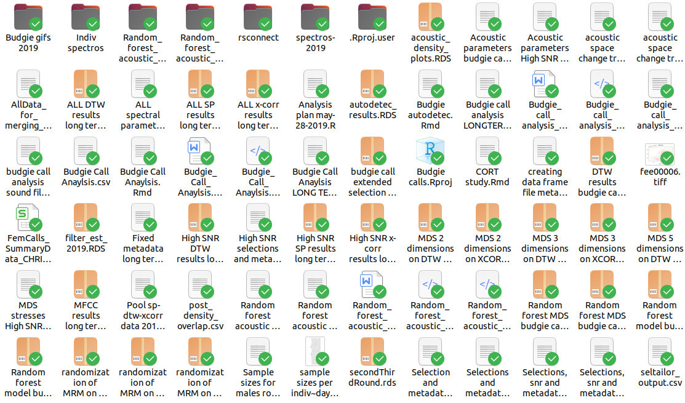

Research compendiums (in R)
Objectives
Get familiar with tools for organizing project directories and data
Get experience on using compendiums for research data analysis
As data scientific analyses increase in complexity, so do the challenges of ensuring reproducibility in these analyses. Several proposals have emerged to try to solve reproducibility issues in computational data analysis.
Unfortunately, this is further complicated by the lack of formal instruction in data handling and structuring for analysis that scientists (we) suffer from. This makes it almost inevitable that there is little consistency and even chaos in our data organization for research projects. This is an example of a “poorly structured” project (to use a euphemism):
This (lack of) “structure” is impractical. Unfortunately, it is likely not an isolated case.
In this tutorial, we will discuss some of the tools that have been developed to address these problems that have been developed in R.
0.1 Folder structure formats
Here you will find a short and by no means exhaustive list of examples of folder structures for data analysis projects.
0.1.1 “Noble” format
Noble (2009) proposes a specific data structure for bioinformatics data (although it could be adapted to other needs):

This structure, however, uses folders with dates to keep the chronological order of the analysis, something that should be documented with a version control system (i.e., Git). Therefore, it is not very functional.
0.1.2 “R-dir” format
In this blog the following format is proposed:
Código
analysis_r-dir/
|
├── code/
│ ├── processed
│ └── raw
├── data/
│ ├── raw/
│ └── clean/
├── figures/
│ ├── exploratory
│ └── final
└── text/
├── final
└── notes
The main folders include:
code: contains all R scripts (or other languages); raw ones go in “./code/raw” and processed ones in “./processed/clean”
data: any type of data, raw ones go in “./data/raw” and processed ones in “./data/clean”
figures: exploratory figures go in “./figures/exploratory” and final ones in “./figures/final”
This format can be copied (or cloned) from its GitHub repository.
The proposed structure is similar to others found on the web. Variations depend somewhat on the type of data and the format of the obtained results (i.e., images vs. phylogenetic trees).
0.1.3 “Moldach” format
This format is very similar to the previous one, and it is mainly included to highlight the common factors among the different proposed formats:
Código
project_name
|--data
|--raw
|--file_001.xlsx
|--file_002.gen
|--file_002.sample
|--tidy
|--file_001-cleaned.csv
|--refs
|--Oldach_2018.pdf
|--analysis
|--01-analysis.Rmd
|--figures
|--01-scatterplot.jpg
|--01-correlation.png
|--R
|--exploratory_analysis.R
|--pdf_scraper.R
|--name_of_project.Rproj
|--run_all.R
The main differences with the “r-dir” format are the use of a references folder and the code to compile the compendium in the root directory.
The format is described in detail in this blog and can be cloned from its GitHub repository.
0.2 R packages as templates for compendiums
Some of these tools available in R packages use the folder structure and continuous integration of these packages (Marwick et al. 2018; Vourre & Crump 2020). One of these is the vertical package (Vourre & Crump 2020). Its authors propose several advantages of using this format to share research products (from experiment scripts to articles, presentations, and posters):
R packages have a standardized and well-organized file structure that is useful for organizational purposes
Researchers often develop custom functions for analysis, and putting them in an R package makes it easier to share the functions
R packages can include project data and provide a natural way to document the data using the same schemas for documenting R functions
R packages include various documents through the vignettes folder, which could in principle include various formats for communicating research, such as a manuscript or a set of slides written in R Markdown
R packages can be automatically converted into websites via
pkgdown, providing an attractive format for sharing research-related materials
However, using this format can generate more problems than it helps to solve. Here I list some of the inconsistencies:
Functions should be used once or in a single point in the analysis flow, so why compile and document them in such detail?
Documenting packages and the functions within them is complex
DESCRIPTION duplicates effort and information from README and demands greater knowledge of package-specific format and conventions
Making data available when loading the environment does not provide advantages and makes the data less accessible outside of R (i.e., there is no gain from using
data("database")instead ofread.csv("database.csv"))Packages are for sharing tools that are used repeatedly. Data analysis reproduction occurs once or a few times
R packages have folders that have no functionality in data analysis (“man”, “vignettes”, “inst”)
Integrating the components of a package (necessary to be able to use continuous integration) requires other files with complex structures and conventions that imply an unnecessarily steep learning curve
For a more detailed discussion of the problems associated with using packages as templates, we recommend reading this post (McBrain 2020).
0.3 R Packages for Compendium Generation
0.3.1 vertical
The vertical package provides a structured workflow based on the folder structure and continuous integration of R packages for creating and sharing research materials and resources as an R package (Matthew et al. 2020). The package can be installed and/or loaded from GitHub like this (it is not yet on CRAN(?)):
Código
# install.packages('devtools')
remotes::install_github("CrumpLab/vertical")
library(vertical)
You will also need other packages if you want to make use of functionalities like writing articles and generating presentations:
Código
# install papaja
devtools::install_github("crsh/papaja")
install.packages("tinytex")
tinytex::tlmgr_update()
# if unable to generate articles try this as a last resort
# update.packages(ask = FALSE, checkBuilt = TRUE)
0.3.1.1 ‘vertical’ workflow
Installing the vertical package adds a new project template to RStudio (RStudio must be restarted after installing vertical for it to recognize the template). Users can start a new “vertical” project from RStudio by choosing the option when creating a new project. By default, a “vertical” project is structured as follows:

The new project contains a more complex skeleton than that of an R package:
- Folders for raw data, data, and vignettes
- A
_pkgdown.ymlfile to control the parameters of the website when processed withpkgdown - Additional folders for project research products like “experiments”, “manuscript”, “model”, “posters”, and “slides”.
By default, vertical includes R Markdown templates from other packages within each folder to create each type of content. As a result, vertical suggests using R as a single-source solution for creating research products.
0.3.1.2 Creating a ‘vertical’ project
After installing vertical, restart RStudio, then follow these steps to start a new vertical project. When choosing a name, it must be a valid R package name. For example, the name must contain letters, numbers, or periods (e.g., my.name), but not periods at the end. This means no spaces, hyphens, or underscores.

You can also create a ‘vertical’ project from the console, see the documentation of vertical_project() for more options. This brings up the R project templates window from the console:
Código
vertical::vertical_project()
This is the folder structure it generates:
Código
vertical_comp/
|
├── data_raw/
├── manuscripts/
│ ├── manuscript.Rmd
│ └── r-references.bib
├── posters/
├── R/
├── slides/
└── vignettes/
Exercise 1
1.1 Create a compendium using vertical
1.2 Modify the R markdown file in ‘./manuscripts/’ and generate the HTML again
0.3.2 rrtools
The goal of rrtools is “to provide instructions, templates, and functions for creating a basic compendium suitable for writing reproducible articles or reports in R” (Marwick 2019). This package documents key steps and provides useful functions to quickly create a new research compendium.
rrtools provides a template for academic writing using R Markdown and bookdown. It also allows for the isolation of your computational environment using Docker, version control of packages using `MR
AN, and continuous integration usingTravis`:
Código
devtools::install_github("benmarwick/rrtools")
library(rrtools)
We can start a compendium with rrtools like this (do not run it if you are within an Rstudio project):
Código
rrtools::use_compendium("package_name")
You need to update the DESCRIPTION file (located in the compendium directory) to include accurate metadata. For example, the ‘imports’ section should have the names of the packages used in the code in our compendium (‘Imports: warbleR, baRulho, NatureSounds’).
We can add a license to the compendium like this:
Código
rrtools::create_compendium("package_name")
This adds the license to DESCRIPTION and generates a LICENSE file with license details. It defaults to using the MIT license although other licenses can be defined.
Unlike vertical, rrtools does not generate all the basic folders necessary for a compendium. We can create these folders like this:
Código
rrtools::use_analysis()
This generates the “./analysis” folder with the following structure:
Código
analysis/
|
├── paper/
│ ├── paper.Rmd # document to generate the article
│ └── references.bib # references in bibtex format
├── figures/ # figures produced by rmarkdown
|
├── data/
│ ├── raw_data/ # raw (original) data
│ └── derived_data/ # processed data
|
└── templates
├── journal-of-archaeological-science.csl # citation style
|
├── template.docx # generated article template
└── template.Rmd # article rmd template
The README.Rmd file can be created like this:
Código
rrtools::use_readme_rmd()
The generated README includes a template that shows how to cite your project (it should be edited to include the correct title and DOI). It also contains license, figures, code, and data information for your compendium.
This function also adds two other Rmd files: a code of conduct for users (CONDUCT.md) and one with basic instructions for people who want to contribute to your project (CONTRIBUTING.md).
It also offers functions like rrtools::use_dockerfile() and rrtools::use_travis() to facilitate continuous integration. Visit the package’s github repository for more detail.
0.3.3 workflowr
The workflowr package aims to help researchers “organize their analyses in a way that promotes effective project management, reproducibility, collaboration, and sharing of results” (Blischak et al. 2019). workflowr combines literate programming (knitr and rmarkdown) and version control (Git, via git2r) to generate a website containing documented and versioned results.
Unlike rrtools and vertical, workflowr does not emulate the folder structure of R packages, which simplifies its use and makes its structure more intuitive from the researcher’s point of view.
These are some of the features of the package detailed on its github site:
- Organized
- Provides a project template with organized subdirectories
- Mixes code and results with R Markdown
- Uses Git to version both source code and results
- Reproducible
- Displays the version of the code used to create each result
- Runs each analysis in an isolated R session
- Records the session information for each analysis
- Sets the same seed for generating random numbers for each analysis
- Shareable
- Creates a website to present the results of your research
- Documents how to host your website for free via GitHub Pages or GitLab Pages
- Creates links to previous versions of results
You can install the package like this:
Código
install.packages("workflowr")
library(workflowr)
To create a project with workflowr, first you must set up git with the wflow_git_config() function and then start it with wflow_start():
Código
# Set up Git
wflow_git_config(user.name = "full name", user.email = "email@domain")
# Start a project
wflow_start("my_compendium")
This is the folder structure of the ‘workflowr’ compendium:
Código
my_compendium/
├── .gitignore
├── .Rprofile
├── _workflowr.yml
├── analysis/
│ ├── about.Rmd
│ ├── index.Rmd
│ ├── license.Rmd
│ └── _site.yml
├── code/
│ ├── README.md
├── data/
│ └── README.md
├── docs/
├── myproject.Rproj
├── output/
│ └── README.md
└── README.md
And with this code we can compile the compendium site:
Código
wflow_build()This command ‘knits’ all R Markdown files in the ‘./analysis’ folder and saves the corresponding HTML files in ‘./docs’. Each file is created in its own external R session to avoid potential conflicts between analyses (this is the default behavior of Rmd files). It also opens the local copy of the compendium site in the internet browser. We can also take a look at the local copy of the site like this:
Código
# view compendium site
wflow_view()
workflowr distinguishes between R Markdown files that are published and those that are not published. A published file is included on the online website; while the HTML file of an unpublished R Markdown file can only be viewed on the local computer. Since the project was just initiated, there are no published files. To see the project status of workflowr, we should use wflow_status():
Código
# check current status
wflow_status()
If we want to make the HTMLs public, we should use the wflow_publish() function and provide the names of the R markdowns that generate them with the files argument. Additionally, we need to add a message for the ‘commit’ accompanying the changes generated when synchronized with the remote copy:
Código
# publish rmds
wflow_publish(files = c("analysis/index.Rmd", "analysis/about.Rmd",
"analysis/license.Rmd"), message = "my first commit of the compendium")
At this point, we have created a versioned website locally
. The next step is to put it in an online repository (i.e., GitHub or GitLab). To upload and/or synchronize the compendium (including the website) to GitHub, we use the wflow_use_github() function. The only argument it requires is the username:
Código
wflow_use_github("my_compendium")
The “getting started” tutorial of workflowr provides more details for each of the steps to generate compendia with this package. The documentation is quite comprehensive, including several other tutorials for customizing the compendia and their websites. Here you can find the list of tutorials.
Exercise 2
2.1 Create a compendium using workflowr
2.2 Build the compendium site
0.3.4 sketchy
This is a package we are currently developing. At the moment, it only allows creating folder structures and generating an Rmarkdown to write the article. It also allows visualizing the compendium structure in the console. The main difference from the other packages is that it does not adhere to a single structure; it provides several alternative structures and also allows the user to generate their own formats.
To use it, you must first install it from github like this:
Código
# From github
devtools::install_github("maRce10/sketchy")
# load package
library(sketchy)The package comes with 13 folder structures. You can use them with the compendium_skeleton() function. The function creates the folders/subfolders and prints a diagram of the compendium in the console:
0.3.5 Basic Compendium
Código
path = tempdir()
make_compendium(name = "project_x", path = path, format = "basic")
(in the example, a temporary directory is used but this should be changed to the directory where you want to create the compendium)
0.3.6 Alternative Formats
You can use formats from other sources. In this case, we use the one from Wilson et al. (2017):
Código
make_compendium(name = "project_y", path = path, format = "wilson")
You can also add comments to each folder to explain its contents:
Código
make_compendium(name = "project_z", path = path, format = "large_compendium")
When you create a compendium that includes a folder called “manuscript,” the package automatically adds the “manuscript_template.Rmd” file that can be used to write the project’s article.
The idea is to include functions to identify large files that cannot be uploaded to github and be able to upload them to other repositories (i.e., figshare or zenodo).
Exercise 3
Create a compendium with
sketchyusing the ‘basic’ formatCreate a compendium with
sketchyusing the ‘sketchy’ format
0.4 References
- Araya-Salas, M., Willink, B., Arriaga, A. (2020), sketchy: research compendiums for data analysis in R. R package version 1.0.0.
- Aust, F. & Barth, M. (2020). papaja: Prepare reproducible APA journal articles with R Markdown. R package version 0.1.0.9997. https://github.com/crsh/papaja
- Blischak JD, Carbonetto P and Stephens M. Creating and sharing reproducible research code the workflowr way [version 1; peer review: 3 approved]. F1000Research 2019, 8:1749. (https://doi.org/10.12688/f1000research.20843.1)
- McBain (2020). Before I Sleep: Project as an R package: An okay idea. https://milesmcbain.com/posts/an-okay-idea/
- Ben Marwick (2019). rrtools: Creates a Reproducible Research Compendium. R package version 0.1.0. https://github.com/benmarwick/rrtools
- Noble WS (2009) A Quick Guide to Organizing Computational Biology Projects. PLoS Comput Biol 5(7): e1000424. https://doi.org/10.1371/journal.pcbi.1000424
- Marwick, B., Boettiger, C., & Mullen, L. (2018). Packaging Data Analytical Work Reproducibly Using R (and Friends). American Statistician, 72(1), 80–88.
- Matthew J. C. Crump and Matti Vuorre (2020). vertical: Reproducible worfklow for psychological science research asset creation and communication. R package version 0.1.0.0000. https://github.com/CrumpLab/vertical
- Vuorre, M., & Crump, M. J. C. (2020). Sharing and organizing research products as R packages. Behavior Research Methods, 1–11.
- Wilson G, Bryan J, Cranston K, Kitzes J, Nederbragt L, et al. (2017) Good enough practices in scientific computing. PLOS Computational Biology 13(6): e1005510.
Session information
R version 4.3.2 (2023-10-31)
Platform: x86_64-pc-linux-gnu (64-bit)
Running under: Ubuntu 22.04.2 LTS
Matrix products: default
BLAS: /usr/lib/x86_64-linux-gnu/blas/libblas.so.3.10.0
LAPACK: /usr/lib/x86_64-linux-gnu/lapack/liblapack.so.3.10.0
locale:
[1] LC_CTYPE=en_US.UTF-8 LC_NUMERIC=C
[3] LC_TIME=en_US.UTF-8 LC_COLLATE=en_US.UTF-8
[5] LC_MONETARY=en_US.UTF-8 LC_MESSAGES=en_US.UTF-8
[7] LC_PAPER=en_US.UTF-8 LC_NAME=C
[9] LC_ADDRESS=C LC_TELEPHONE=C
[11] LC_MEASUREMENT=en_US.UTF-8 LC_IDENTIFICATION=C
time zone: America/Costa_Rica
tzcode source: system (glibc)
attached base packages:
[1] stats graphics grDevices utils datasets methods base
other attached packages:
[1] xaringanExtra_0.8.0 emo_0.0.0.9000 sketchy_1.0.3
[4] papaja_0.1.2 tinylabels_0.2.4 rrtools_0.1.6
[7] vertical_0.1.0.0000 workflowr_1.7.1 knitr_1.48
loaded via a namespace (and not attached):
[1] tidyselect_1.2.1 dplyr_1.1.4 fastmap_1.2.0 TH.data_1.1-2
[5] bayestestR_0.13.1 promises_1.2.1 digest_0.6.37 timechange_0.2.0
[9] estimability_1.4.1 mime_0.12 lifecycle_1.0.4 ellipsis_0.3.2
[13] survival_3.2-13 processx_3.8.4 magrittr_2.0.3 compiler_4.3.2
[17] rlang_1.1.4 tools_4.3.2 utf8_1.2.4 yaml_2.3.10
[21] htmlwidgets_1.6.4 pkgbuild_1.4.4 here_1.0.1 pkgload_1.4.0
[25] multcomp_1.4-25 miniUI_0.1.1.1 purrr_1.0.2 grid_4.3.2
[29] datawizard_0.10.0 fansi_1.0.6 urlchecker_1.0.1 git2r_0.33.0
[33] profvis_0.3.8 xtable_1.8-4 colorspace_2.1-1 ggplot2_3.5.1
[37] emmeans_1.9.0 scales_1.3.0 MASS_7.3-55 insight_0.19.11
[41] cli_3.6.3 mvtnorm_1.2-5 rmarkdown_2.28 crayon_1.5.3
[45] generics_0.1.3 remotes_2.5.0 rstudioapi_0.16.0 httr_1.4.7
[49] parameters_0.21.3 sessioninfo_1.2.2 cachem_1.1.0 stringr_1.5.1
[53] splines_4.3.2 assertthat_0.2.1 effectsize_0.8.6 formatR_1.14
[57] vctrs_0.6.5 devtools_2.4.5 Matrix_1.6-5 sandwich_3.1-0
[61] jsonlite_1.8.8 callr_3.7.6 packrat_0.9.2 glue_1.7.0
[65] codetools_0.2-18 ps_1.7.7 lubridate_1.9.3 stringi_1.8.4
[69] gtable_0.3.5 later_1.3.2 munsell_0.5.1 tibble_3.2.1
[73] pillar_1.9.0 clisymbols_1.2.0 htmltools_0.5.8.1 R6_2.5.1
[77] rprojroot_2.0.4 evaluate_0.24.0 shiny_1.8.0 lattice_0.20-45
[81] memoise_2.0.1 httpuv_1.6.13 Rcpp_1.0.13 coda_0.19-4.1
[85] whisker_0.4.1 xfun_0.47 fs_1.6.4 zoo_1.8-12
[89] usethis_2.2.2 getPass_0.2-4 pkgconfig_2.0.3